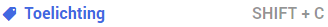
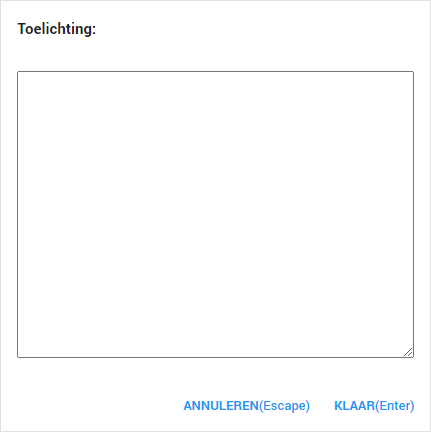

Het label Toelichting gebruikt u om de vindplaats van documenten te noteren indien deze al reeds openbaar gemaakt zijn en u hierom het document niet nogmaals openbaar wilt maken. Echter, kan dit label vrij gebruikt worden voor andere doeleindes. Wij raden u echter aan om opmerkingen en toelichting te plaatsen bij de opmerkingen van beoordelaar of door middel van annotaties, meer informatie hierover vindt u in het topic Opmerkingen plaatsen.

U kunt de toelichting opnemen in het tekstvak.
